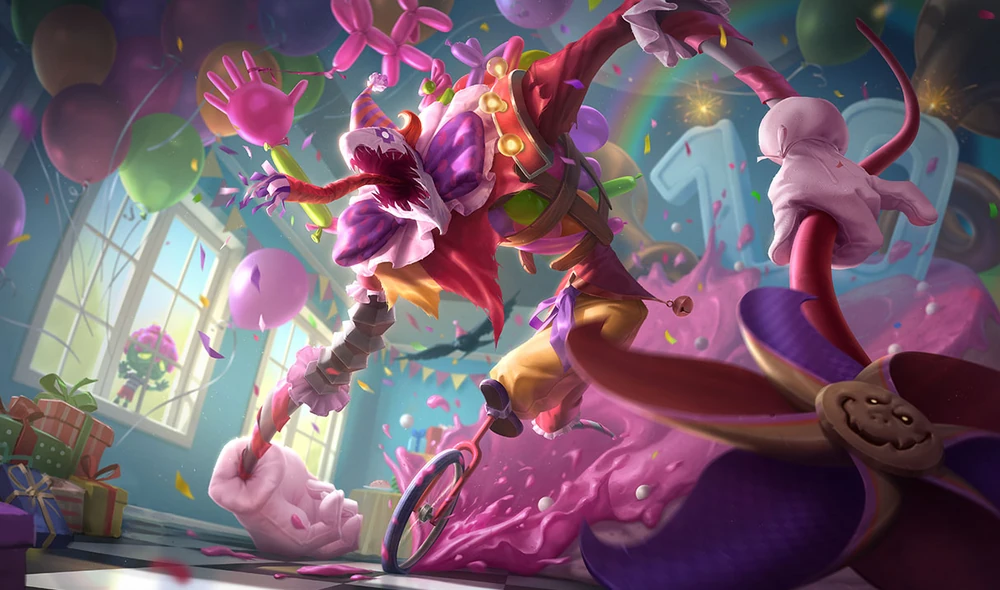
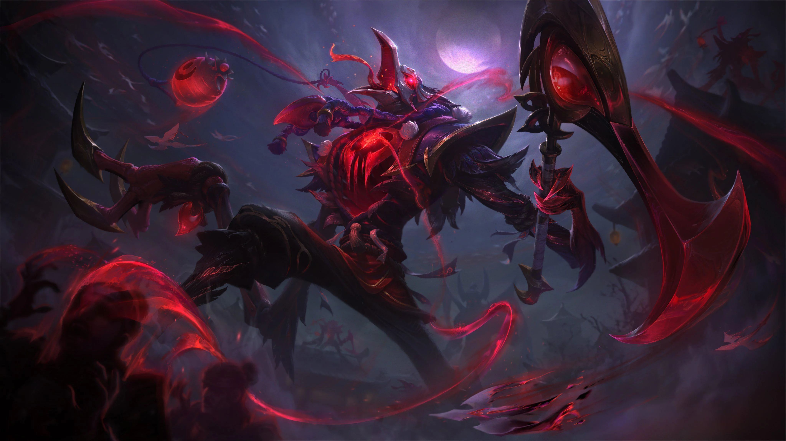
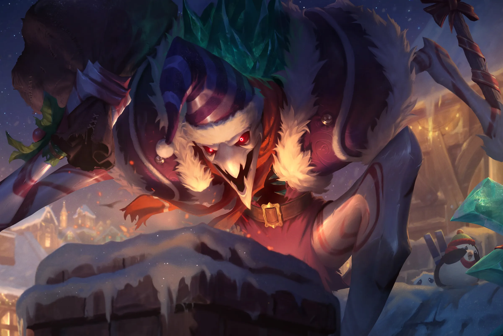
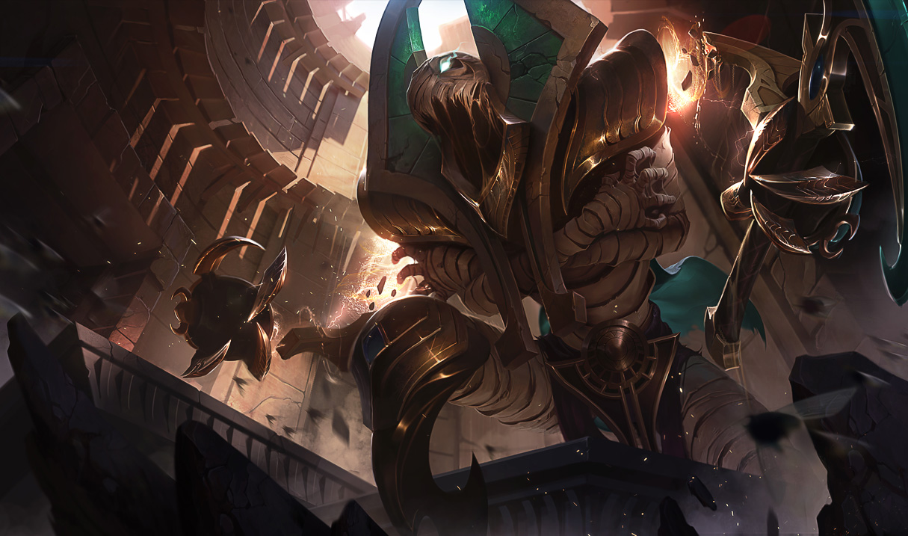
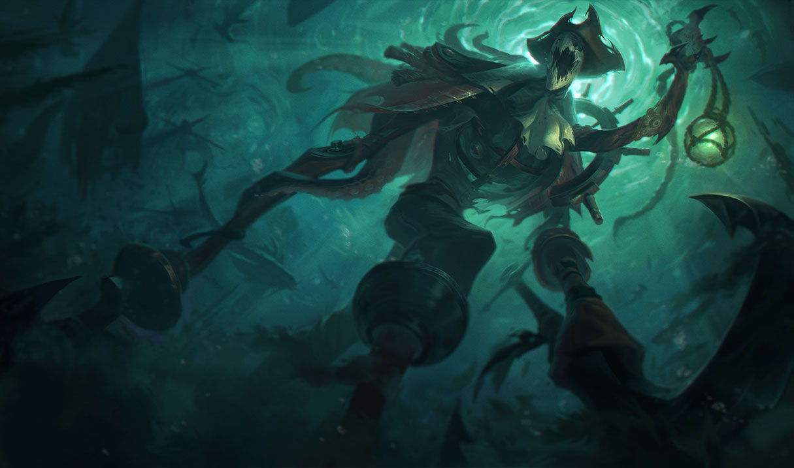
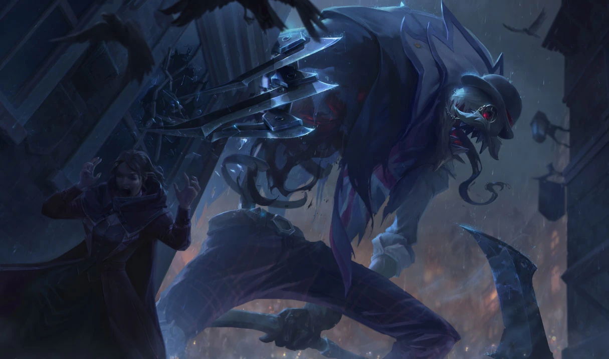

Spectral Fiddlesticks 520 RP / 16-Mar-2010
Surprise Party Fiddlesticks 975 RP / 27-Oct-2011

Praetorian Fiddlesticks 1350 RP / 08-Nov-2018

Pumpkinhead Fiddlesticks 520 RP / 19-Oct-2010
Blood Moon Fiddlesticks 1350 RP / 18-Apr-2024

Star Nemesis Fiddlesticks 1350 RP / 14-Jul-2022
Dark Candy Fiddlesticks 975 RP / 14-Dec-2012
Risen Fiddlesticks 1350 RP / 29-Apr-2015
Fiddle Me Timbers 750 RP / 26-Apr-2010
Union Jack Fiddlesticks 520 RP / 12-Feb-2010